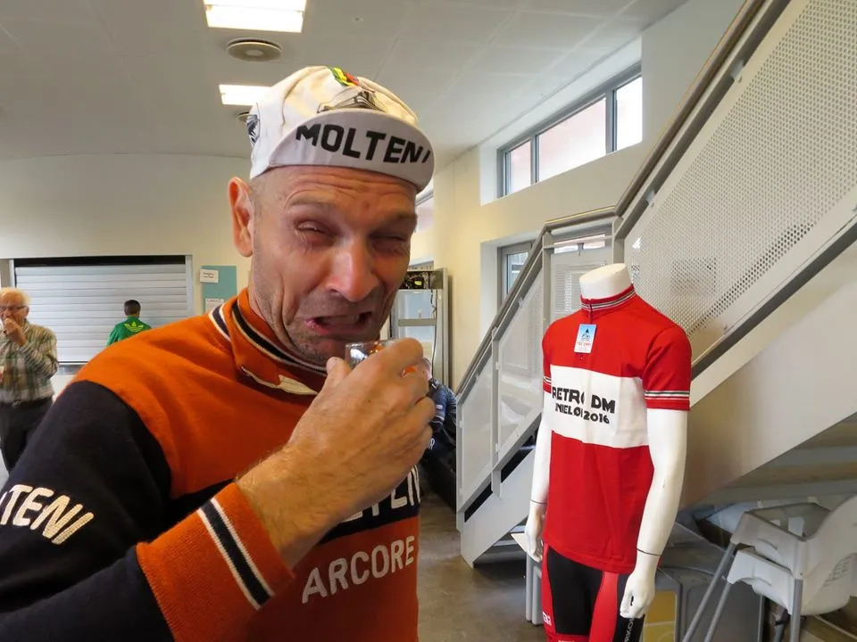
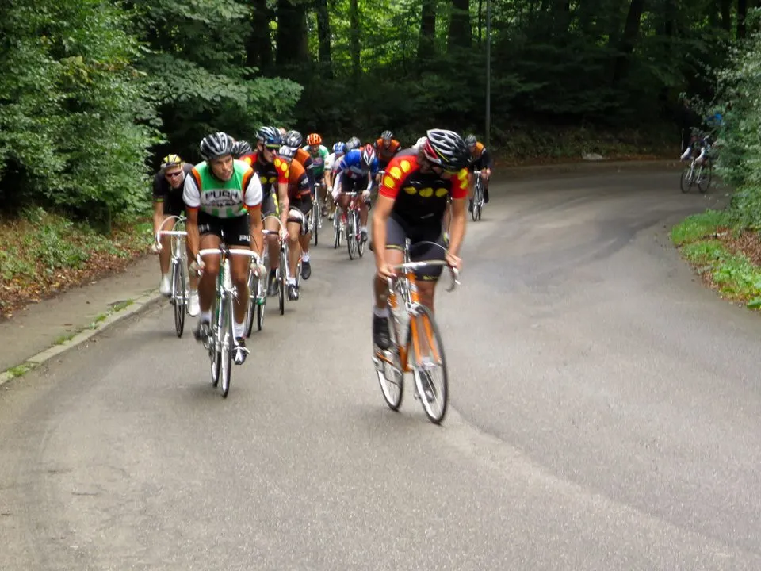
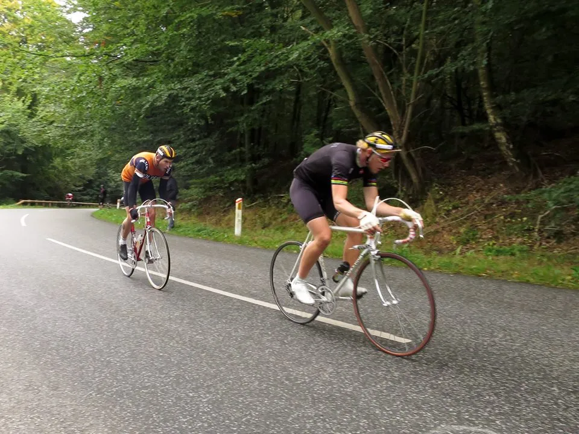
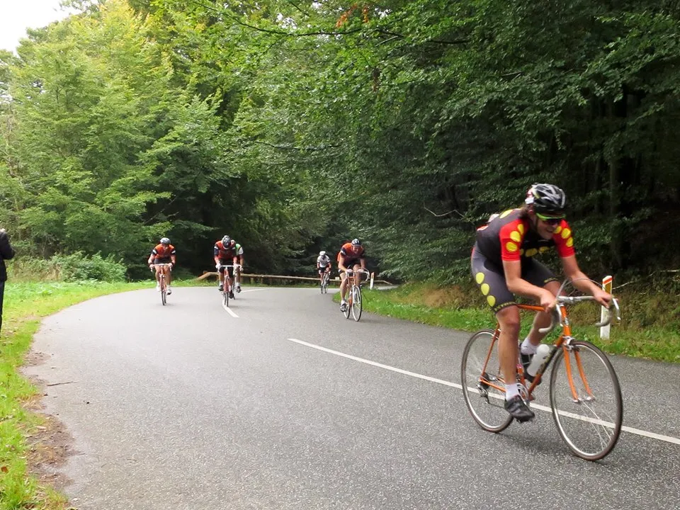

Dobbeltsejr til Squadra Molteni ved Retro-DM 2016

Holdet sikrede sig sejren i både den åbne klasse og H50 klassen ved Retro-DM 2016, men det skete ikke uden drama, styrt og taktisk snilde.
Retro-DM i linieløb 2016 blev i weekenden afgjort i de klassiske bakker omkring Brejning ved Vejle. Ruten bød på 56 kuperede kilometer, inklusiv 16 km. neutral start og med den benhårde Munkebjerg som den helt afgørende faktor.
Tidligt lørdag morgen begyndte parkeringspladsen ved Gauerslundhallen at fyldes med retro-ryttere og cykler af stål fra før 1991. Feltet på 37 ryttere begyndte så småt at indfinde sig ved indskrivning, hvor der på klassisk vis blev serveret Gammel Dansk til morgenmaden.

Kaptajn Bjørnsteen måtte bide den meget store Gammel Dansk over. Til gengæld fik han den retur to gange på Munkebjerg.
Squadra Molteni stillede stærkt med Kaptajn Niels Bjørnsteen, Eigil Leegaard, Grane Maaløe, Jens Langergaard, Finn Birk, Jacob Ingemann Hansen, Maria Winther og holdets to nye stagiaires Mark Petersen og Max Nielsen.
Løjtnant Kasper Sørensen er pga. af et terrænløb samme eftermiddag forhindret i at deltage som rytter i dagens Retro-DM.
Men Squadra Moltenis chefstrateg, Per Sandahl, har kommanderet Kasper ud som sportsdirektør, med særlige opgaver før starten, på det vigtige “Col de Munkebjerg” og på opløbsstrækningen.
Retro-DM begynder med Masterstart
Kl. 9.30 begyndte en hostende Peugeot 205 1.9 cti at få gang i motoren, alt i mens løbsdirektør Thure Fuhrmann Kjær gav de sidste informationer, og så trillede rytterne ud på de første 16 km. neutral start.
Thure er i hopla! Iført den legendariske VM-striktrøje styrer han retro-feltet ud på den 16 km. lange masteromgang. Men ikke mange kilometre ude på ruten sker det første drama: Helt oppe forrest i feltet, lige bag masterbilen, ligger de 3 Team Christiania ryttere. De ligger nærmest med næserne helt nede ved Peugeot’ens udstødningsrør, og nyder de tunge og dårligt forbrændte benzingasser.
Pludselig lyder der et kæmpe brag. Er det en Peugeot der er punkteret? – eller er det en Christianit, som har fået næsen for langt op i udstødningsrøret?
Det var dog ingen af delene. Det var blot Peugeot 205’erens der signalerede uforbrændt benzin, og at nu ville den godt have lidt flere omdrejninger. Det får den så, og på Andkærbakken bliver masterfarten sat lige rigeligt højt. Så højt, at bilen må stoppe på toppen, for at få samlet resten af feltet op. Resten af masteromgangen forløber kun med få benzingaseksplotioner og få hårde opbremsninger i feltet. Ikke engang Yeh’ns fra Team Christiania styrter…
Officiel start
Afslutningen på masteromgangen er den samme som opløbsstrækningen, så rytterne fik lejlighed til at prøve den sidste skrappe stigning op i mod mål. Den var hård nok til at forårsage den første splittelse i feltet.
Team Christiania’s Hasse Rømer satte et hårdt solidt tempo op over bakken, og der var ingen der kunne gemme sig. Squadra Molteni sad godt med, men ligeledes gjorde konkurrenterne det også.

Ved målstregen stod løbsdirektøren og skød løbet i gang med den officielle start på Retro-DM. De næste 40 kilometer skulle afgøre det uofficielle danmarksmesterskab i retro-cykling.
Farten bliver straks sat i vejret. Team Christiania sætter et hårdt tempo på opløbsbakken. Squadra Molteni ligger godt med fremme med Mark Niels, Jacob, Eigil, Grane og Max. Foruden nogle ensomme ulve ligger også Team K-Werk fremme med 2 mand. Team Peugeot Total har klaret masteromgangen uden defekt!, og ligger fremme med både Morten og Pelle.
Der stikkes i højre og venstre
En frontgruppe på ca. 20 ryttere bliver etableret godt 3-4 km ude på ruten. Der bliver kørt urolig og aggressivt. Team Christiania og Squadra Molteni skiftes til at stikke i højre og venstre.
Efter 5 km kommer “Ekspressen fra Uldum”, Squadra Moltenis Max Nielsen, med det første dybe ryk. Da Team Christiania får kørt Max ind, rykker kaptajn Bjørnsteen kontra.
De næste 7 km skiftes Max og Mark til at rykke igen og igen. Og der er tydelig frustration og intern råberi at i Christiania-lejren. Jørn fra K-Werk virker utrolig oplagt. Han kører aggressivt – og stikker et par gange. Jeppe Thiemer fra Puch og Daniel Dallerup fra Thor er hele tiden med helt fremme. De virker tændte.
Efter 15 km. kommer en god kontrabakke. Der bliver rykket. Jørn træder til, men træder kæden i stykker. Han får hjælp fra en holdkammerat til at reparere kæden, mens hans løb er kørt.
På toppen er frontgruppen sprængt. Vi er kun på 10 mand nu. Squadra Molteni er tilbage med Mark, Niels, Eigil, Jacob og Max. Mark ser meget stærk ud. Nærmest som om, at han kun lige er begyndt at lege lidt. Jacob har godt overblik. Han placerer sig perfekt i alle sving. Niels og Eigil lider lidt. Max hænger lidt. Han skal lige oplade inden næste ryk.
Dramaet i rundkørslen
I en rundkørsel er der igen optakt til drama. Den forreste del af af frontgruppen drøner fint igennem. Men et par ryttere er ved at blive kørt ned af en lokal anlægsgartner, der med fuld overlæg drøner lige ud i rundkørslen.
Max og frontgruppens servicevogn kører efter anlægsgartneren med boogietrailer, og får bragt ham til standsning. Heldigvis ses det hele af en civil politibil, der når at overtage situationen, inden Max har lavet anlægsgartneren til spaghetti carbonara.
Munkebjerg er et nøglepunkt på ruten. Med sine 1200 meter er den I sig selv hård, men det er I særdeleshed indkørslen til bakken, som er med til at gøre den endnu mere afgørende.
Her skal ryttere op af Andkærbakken, en lang jævn stigning, efterfulgt af en særdeles teknisk nedkørsel til bunden af Munkebjerg. Det er på disse 6-7 kilometer, at de stærke og teknisk dygtige ryttere virkelig kan lave afgørende forskelle.
Marks ryk på Andkjærbakken
Efter 20 km rammer frontgruppen Andkærbakken. Her sætter Mark et dybt angreb ind. Kun Jens fra Team Christiania og Daniel Dallerup har kræfter til at følge med. Eigil, Niels og Jacob bakker selvfølgelig af og kører defensivt for at give Mark de bedste chancer.
Hasse og Jonas (Team Christiania) skal heller ikke nogle steder. Initiativet er nu overladt til Jeppe Thiemer (Team Puch) og Morten Mejsen (Team Peugeot). Morten brokker sig. Men det skal han jo. Han kender gamet.
Frontgruppen er nu splittet: Helt i front er Mark (Squadra Molteni), Jens (Team Christiania) og Daniel (Thor). En forfølgergruppe med Niels Bjørnsteen, Eigil Leegaard og Jacob Ingemann (Squadra Molteni), Morten Mejsen (Team Peugeot) og Jeppe Thiemer (Team Puch).
Få kilometer fra Col de Munkebjerg sætter Eigil og Niels et angreb ind på nedkørslen af “Golfbakken”. Hasse Rømer hænger godt på. Længere nede af Golfbakken sker der drama i frontgruppen: På den glatte nedkørsel styrter Jens ud over et autoværn. Mark og Daniel venter på Jens, som heldigvis ikke kommer galt afsted.
Lidt efter de to frontgrupper kommer Grane Maaløe, Jens Langergaard (Squadra Molteni), Jørgen Tietze (Team K-Werk) og Thomas Marker (Sanson) drønende ned. Grane guider gruppen ned af den teknisk svære nedkørsel.
Da gruppen er kommet sikkert igennem jerbaneviadukten, der er det sværeste sted på nedkørslen, fortsætter Thomas Marker ud over et autoværn i en skarp kurve. Heldigvis sker der nogen alvorlig skade. Kun et bøjet styr, et knækket bremsegreb og en mindre kødsår på inderlåret. Thomas måtte dog køres hjem i den neutrale servicebil.
Munkebjerg bliver næsten afgørende
På Munkebjerg er der for alvor kommet spredning på feltet. Mark og Jens har lagt sig i front, og Daniel er 15 sekunder efter, og konstatere tørt ”jeg er sat”, da han ser Kasper med kameraet på toppen.

Mark ligner en som er ved at forsøge at flå styr og frempind ud af kronrøret på hans røde Eddy Merckx. Han hænger godt på Jens, men hans gearing på 46/18 er i den grad retro, og han står tungt i pedalerne på det sidste stejle stykke.
30 sekunder efter kommer Team Christianias Jonas Holm, skarpt forfulgt af hvad der nu kan betegnes som forfølgergruppen: Team Christianias Hasse Rømer, Jeppe Thiemer fra Puch, Morten Mejsen fra Team Peugeot og Niels, Jacob og Eigil fra Squadra Molteni.

De sidste 10 kilometer skal nu afgøre Retro-DM.
I forfølgergruppen er der kamp. Hasse og Jonas fra Team Christiania rykker fra. Jacob og Niels rykker efter. Morten Mejsen, Jeppe og Eigil hænger lidt. Forfølgergruppen er sprængt. Jacob er stærk – og efter få kilometer er han og Niels med oppe ved Hasse og Jonas. Forude ligger Mark og Jens – de øger stille og roligt til Daniel.
1 minut efter ligger nu Hasse, Jonas, Jacob og Niels. Og ca 30 sek efter ligger Morten Mejsen, Jeppe og Eigil.
Da frontduoen kommer gennem et lille stykke skov, styrter Jens igen i et sving. Mark forsikrer sig hurtig at han er ok, og denne gang bliver der ikke ventet.
Finalen: Mark vinder Retro-DM!
I ensom majestæt kommer Mark over stregen med hænderne i vejret. Løjtnant, Kasper Sørensen, står klar med lykønskninger og tæller sekunderne ned til andenpladsen, som Jens fra Team Christiania løber med.
Jens er blodig på benene, men er hurtigt henne og ønske Mark tillykke. Samtidig viser han god sportsånd, ved, som det første, at sige, at han ikke følte han kunne have slået Mark, selvom han ikke var styrtet. Den stærkeste rytter vandt, og Jens er stolt og glad for sin andenplads.

Daniel kommer ind som nummer 3, halvandet minut efter Mark.
Og nu er det kampen om H50-klassen, som skal afgøres. I forfølgergruppen gælder det nu kampen om H50. Niels trykker den af. Han kan nu skimte en sejr i H50. På opløbsbakken bliver det Hasse, der kører sig til en 4. plads kun 2 sek foran Jacob. Jonas og Niels kommer ind på en henholdsvis 6. og 7. plads (Niels nummer 1 i H50).
Retro-DM linieløb 2016 – Top 10:
- Mark Petersen Squadra Molteni 1:52:11
- Jens Christian Dich Team Christiania + 43
- Daniel Dallerup RC 1910 + 1:26
- Hasse Rømer Team Christiania + 1:48
- Jacob I. Hansen Squadra Molteni + 1:50
- Jonas Holm Team Christiania + 1:52
- (1 H50) Niels Bjørnsteen Squadra Molteni + 2:01
- (2 H50) Eigil Leegaard Squadra Molteni + 2:17
- Morten Mejsen Peugeot Re-cycled + 2.20
- Jeppe Thiemer Team Puch + 2:31
Epilog
Tilbage i Gauerslundhallen har Thure sørget for, at der var lidt god rom til de gæve retroryttere at styrke sig på. Max Nielsen tryller et par store flasker belgiske Leffe op af baglommerne.
Det er en fest at være til Retro-DM. Pelle Clemmesen når ikke at få så meget rom. Han drøner ned til Brød & Co i Vejle. Pelle har taget initiativet til en fælles Retro-DM frokost i Gauerslundhallen. Tak for det Pelle.
Tak til Thure Fhurmann, DGI Gran Fondo Munkebjerg og Retro-DM for et godt og velafviklet løb. Tak til alle i retromiljøet for en god og hyggelig dag. Tak til la squadra …
FORZA SQUADRA MOLTENI
På vores Facebook-side finder du flere billeder fra Retro-DM.